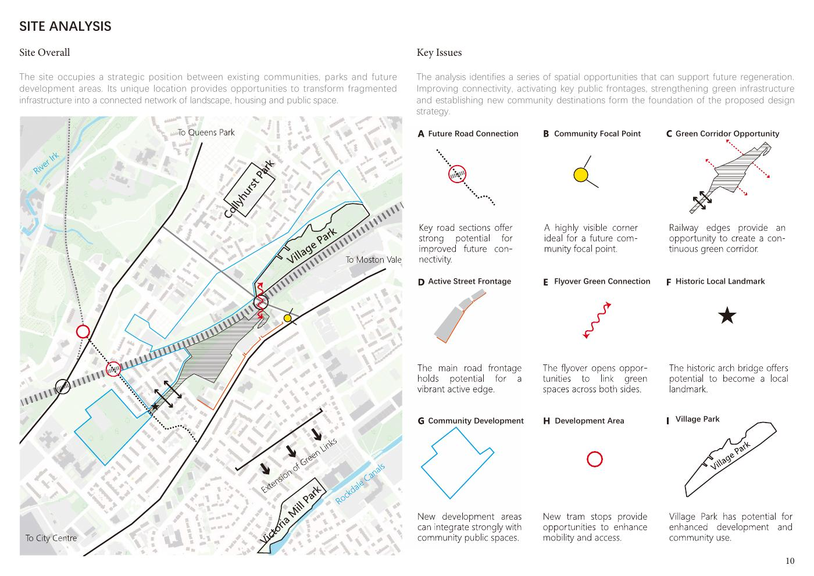

MSA / 学术研究
Green Stitch · 英国居住区研究
以曼彻斯特 South Collyhurst 为场地，探索如何把铁路边缘的空间阻隔转化为连接社区、绿地与居住空间的路径。
01 · 定义场景与问题
South Collyhurst 的铁路走廊形成社区间的物理阻隔，周边公园与开放空间也存在连接不连续的问题。报告以连通性、土地使用、绿地网络和密度等映射梳理场地条件，将连接、公共活动与居住需求组织为设计议题。

02 · 从分析到设计原则
方案以连续绿廊联系公园、社区与新住宅，再把总体愿景转化为 Movement、Built Form & Use、Open Space & Nature、Identity 和 Homes 五类设计规则。这样让不同尺度的设计决策有共同依据。

03 · 回应不同居住方式
报告提出两居室合住公寓、单人 Loft 与家庭联排住宅三种居住类型，并结合共享庭院、公共与私密空间过渡等设计组织日常使用场景。

04 · 方案迭代与反思
设计日志记录了从早期手绘探索、案例研究、设计规则发展，到住宅与材料推敲、实体模型制作和导师反馈的过程。后续反思提出环境性能、构造细节和长期适应性仍需深化。
Studio C 的延伸探索
在居住研究基础上，我继续探索 AI 辅助分析与租房需求 Agent，将对居住场景的理解延伸到需求澄清、信息组织与辅助比较。Agent 当前处于 API 尚未接通的探索阶段。
查看租房 Agent 探索 ↗与用户方向的连接
项目展示了场景分析、问题拆解、方案规则组织与迭代的能力。它是学术设计提案，尚非建成项目，也没有已验证的使用效果。
本页依据实际报告整理。访谈细节仍需原始记录支持。AI 辅助分析与租房 Agent 的延伸关系已由本人确认，具体操作过程将结合原型与材料进一步呈现。